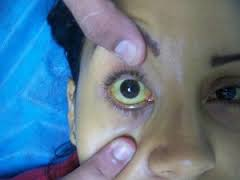

Yellow fever
Definition
Yellow fever is a mosquito-borne viral disease, found in tropical regions of Africa and the Americas.
It principally affects humans and monkeys, and is transmitted via the bite of Aedes mosquitoes. It can produce devastating outbreaks.
Its severity ranges from influenza-like symptoms to severe hepatitis and hemorrhagic fever; fatality rate is less than 20%
Symptoms
- Fever
- Muscle pain
- Headache
- Shivers
- Nausea
- Loss of appetite
- Vomiting
- Enlarged spleen and liver
- Mental dullness and meningitis (in a severe case)
After 3 to 4 days: Most patients improve and symptoms disappear.
However, the disease enters a "toxic" phase in a few cases.
- Fever reappears
- Develops jaundice and sometimes bleeding
- Blood appearing in the vomit
Prevention
- Vaccination: The most important measure for preventing yellow fever
- Keeping a clean environment; clear drainages and gutters
- Sleep under a mosquito net(preferably the treated ones)
- Spray your room with good insecticides twice weekly
- Window nets have been found to be helpful in preventing bites
- Mosquitoes are attracted by sweat,
so it is essentially to take a bath before going to bed and making your bedroom cool - See your physician once you notice this symptoms( fever, joints pain, headache, bitter taste in the mouth and fatigue)
Pictures
Symptom
Aedes mosquitoes

Treatment
There is no specific treatment for yellow fever.
No treatment beyond supportive care to treat dehydration, respiratory failure and fever exists.
Associated bacterial infections can be treated with antibiotics.